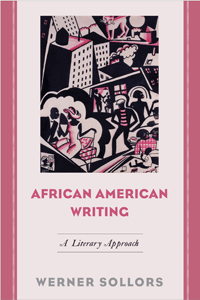

<HTML><head>
<meta name='robots' content='noindex,nofollow' /><script> (function(i,s,o,g,r,a,m){i['GoogleAnalyticsObject']=r;i[r]=i[r]||function(){  (i[r].q=i[r].q||[]).push(arguments)},i[r].l=1*new Date();a=s.createElement(o),  m=s.getElementsByTagName(o)[0];a.async=1;a.src=g;m.parentNode.insertBefore(a,m)   })(window,document,'script','//www.google-analytics.com/analytics.js','ga');   ga('create', 'UA-43183130-1', 'temple.edu');   ga('send', 'pageview'); </script><title>Werner Sollors: African American Writing - Print</TITLE><link rel="stylesheet" href="../general.css" type="text/css"><SCRIPT LANGUAGE = JAVASCRIPT></SCRIPT></HEAD><BODY LINK="#3152A5" VLINK="#3152A5" ALINK=Gray BGCOLOR=White><CENTER><P CLASS=intro><br>Essays that honor the achievement of African American writers from the Enlightenment to the present<br><br></P></CENTER><br>&nbsp;<!--none//--><Table width="100%" border=0 cellspacing=5><tr><td width="175" align="center"></td><td><h1 class = "booktitle">African American Writing</h1> <h1 class = "subtitle">A Literary Approach</h1><h3 class="author">Werner Sollors</h3><p class="info">paper EAN: 978-1-4399-1337-6 (ISBN:1-4399-1337-4)</br>$35.00, Apr 16, <font color=#990033>Available</font><br><p class="info">cloth EAN:  978-1-4399-1336-9 (ISBN:1-4399-1336-6)</br>$99.50, Apr 16, <font color=#990033>Available</font><br><p class="info">Electronic Book EAN: 978-1-4399-1338-3 (ISBN:1-4399-1338-2)</br>$35.00, Apr 16, <font color=#990033>Available</font><br><p class="info">296 pp, 6 x  9, 4 color photos, 1 line drawings, 8 halftones</p></td></tr></table></P></td></tr></table><BR><BLOCKQUOTE><p>"African American Writing<i>&nbsp;is an important volume that proves, once again, why Werner Sollors&nbsp;is one of our important literary critics. In each of his essays, he provides important historical context and close attention to texts.&nbsp;The pieces on Richard Wright, Zora Neale Hurston, Ralph Ellison, and Charles W. Chesnutt shed new light on these well-known figures by providing analyses that highlight the depth and dimension of their literary projects. The essays on Frank Webb and Adrienne Kennedy focus much-needed attention on these understudied authors. This model of strong literary scholarship will be indispensable to those who study and teach African American literature."</i>&#8212;<b>Farah Jasmine Griffin</b>, Professor of English and Comparative Literature and African-American Studies at Columbia University, Director of Columbia University's Institute for Research in African-American Studies, and author of <i>"Who Set You Flowin'?": The African-American Migration Narrative</i><br></BLOCKQUOTE><P><P><p>Werner Sollors' <i>African American Writing </i>takes a fresh look at what used to be called "Negro literature." The essays collected here, ranging in topic from Gustavus Vassa/Olaudah Equiano to LeRoi Jones/Amiri Baraka, and in time from the Enlightenment to the Obama presidency, take a literary approach to black writing and present writers as readers and as intellectuals who were or are open to the world. <br><p>From W.E.B. Du Bois commenting on Richard Wagner and Elvis Presley, to Zora Neale Hurston attacking <i>Brown v. Board of Ed.</i> in a segregationist newspaper, to Charles Chesnutt's effigy darkened for the black heritage postage stamp, Sollors alternates between close readings and broader cultural contextualizations to delineate the various aesthetic modes and intellectual exchanges that shaped a series of striking literary works.<br><p>Readers will make often-surprising discoveries in the authors' writing and in their encounters and dialogues with others. The essays, accompanied by Winold Reiss's pastels, Carl Van Vechten's photographs, and other portraits, attempt to honor this important literature's achievement, heterogeneity, and creativity.<br><P CLASS="top"><A HREF="#top">BACK TO TOP</A></P></p><P><BR><H2 class="inpageheading">Excerpt</h2><P>Excerpt available at <a href="http://www.temple.edu/tempress">www.temple.edu/tempress</a></p><br><P CLASS="top"><A HREF="#top">BACK TO TOP</A></P></p><p><h2  class="inpageheading"><A NAME="reviews"></a>Reviews</h2><p><i>"The strengths of these essays are the hallmark of Werner&nbsp;Sollors's work: the exhaustive research and synthetic quality of his thinking. Rarely has any one scholar conducted such careful, painstakingly thorough research of African American literature and history.&nbsp;But most important and perhaps best illustrated in the essays on Charles W. Chesnutt, Adrienne Kennedy, Jean Toomer, and W. E. B. Du Bois is how&nbsp;Sollors's analysis of any work includes and synthesizes formal and thematic features of American and world literature; for&nbsp;Sollors, the literature produced by descendants of African slaves in the United States cannot be understood in isolation from the multiracial and multicultural world in which it has its origins. The quality and quantity of Sollors's work has elevated and inspired the study of African American literature, not only in the United States but also throughout the world."</i>&#8212;<b>M. Lynn Weiss</b>, Associate Professor of English and American Studies at the College of William and Mary and the author of <i>Gertrude Stein and Richard Wright: The Poetics and Politics of Modernism</i><br><p><i>"[Sollors] assembles 12 previously published essays that collectively offer an illuminating and fresh introduction to African-American writers. Together, they constitute a cohesive vision of major writers from the 18th through the 20th century. Sollors's aim is not a general history but to show his subjects 'as readers and as intellectuals who were open to the world.' Artful biographies and synopses contribute to the work's general accessibility. At one point, Sollors quotes Jean Toomer on one of Toomer's short stories: 'Most people cannot see this story because of the inhibitory baggage they bring with them.' In reading these writers as creators and peers of their artistic contemporaries, Sollors lightens that inhibitory baggage as he enlightens the reader."&#8212;</i><b><i>Publishers Weekly</i></b><br><P CLASS="top"><A HREF="#top">BACK TO TOP</A></P></b></p><BR><p><h2 class="inpageheading"><A NAME="contents"></a>Contents</h2><P><SPAN STYLE="font-family: 'Verdana';font-size: 13px;" >Introduction<BR><BR>1. Olaudah Equiano, an Enlightenment Cosmopolitan in the Age of Slavery<BR>2. The Philadelphian Novelist Frank Webb Anticipates the Future<BR>3. The Goopher in Charles W. Chesnutt&rsquo;s Conjure Tales: Superstition, Ethnicity, and Modern Metamorphoses<BR>4. Jean Toomer&rsquo;s Cane: Modernism and Race in Interwar America<BR>5. African American Intellectuals and Europe between the Two World Wars<BR>6. W. E. B. Du Bois in Nazi Germany, 1936<BR>7. Modernization as Adultery: Richard Wright, Zora Neale Hurston, and American Culture of the 1930s and 1940s<BR>8. Of Mules and Mares in a Land of Difference; or, Quadrupeds All?<BR>9. The Autobiography of W. E. B. Du Bois<BR>10. Owls and Rats in the American Funnyhouse: Adrienne Kennedy&rsquo;s Drama<BR>11. LeRoi Jones/Amiri Baraka, Dutchman<BR>12. Obligations to Negroes Who Would Be Kin if They Were Not Negro<BR><BR>Acknowledgments<BR>Notes<BR>Index</SPAN></P><P CLASS="top"><A HREF="#top">BACK TO TOP</A></P></p></P><BR>&nbsp;<p><P><H2  class="inpageheading"><A NAME="author bio"></a>About the Author(s)</H2><p><b>Werner Sollors</b>&nbsp;is Henry B. and Anne M. Cabot Research Professor of English Literature at Harvard University and Global Professor of Literature at New York University Abu Dhabi. He is the co-editor (with Greil Marcus) of <i>A New Literary History of America</i> and the author of <i>Beyond Ethnicity: Consent and Descent in American Culture</i>, <i>Neither Black nor White yet Both: Thematic Explorations of Interracial Literature</i>, and <i>The Temptation of Despair: Tales of the 1940s</i>.<br><P CLASS="top"><A HREF="#top">BACK TO TOP</A></P></P><p><h2  class="inpageheading"><A NAME="subjects"></a>Subject Categories</h2><P><A HREF="/tempress/african.html" TARGET="_top">African American Studies</a><BR><P><A HREF="/tempress/american.html" TARGET="_top">American Studies</a><BR><P><A HREF="/tempress/literature.html" TARGET="_top">Literature and Drama</a></P></P></p><P></P><P>&nbsp;</P><font face="Arial" size="1"><a href="copyright.html" OnMouseOver="window.status='Web Copyright Policy';return true;" OnMouseOut="window.status=''" TITLE="Web Copyright Policy">&copy;</a> 2016 <a href="http://www.temple.edu" target="new" OnMouseOver="window.status='Link to Temple University home page';return true;" OnMouseOut="window.status=''" TITLE="Link to Temple University home page">Temple University</a>. All Rights Reserved. This page: <a href="http://www.temple.edu/tempress/titles/2396_reg.html"OnMouseOver="window.status='Link to the book page';return true;" OnMouseOut="window.status=''" TITLE="Link to the book page">http://www.temple.edu/tempress/titles/2396_reg.html.</a></font></BODY></HTML>                    
